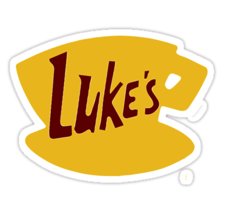
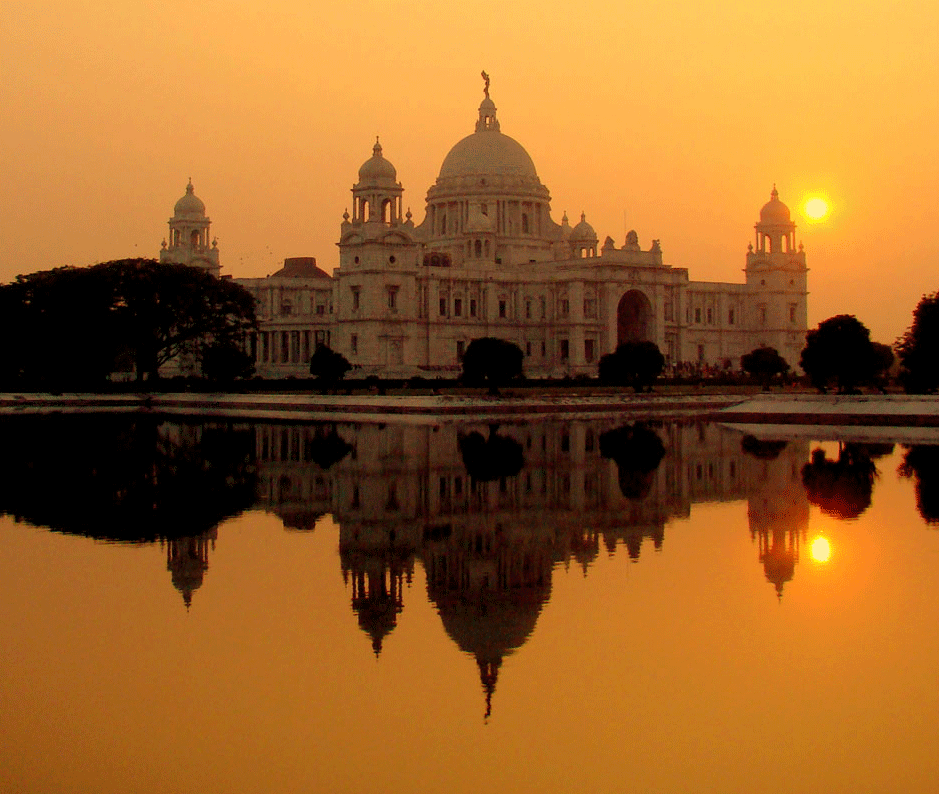

Gilmore Girls fans, rejoice: the glory of Luke’s Diner is coming to life at your favorite coffee shop. Ahead of the show’s anticipated four-episode revival, Netflix is sponsoring the one-day conversion of approximately 200 cafes into the series’ most recognizable dining spot.The online streaming service will be providing us with "all the Luke's Diner essentials" for our staff and baristas, including branded hats and aprons. Don't miss this event!
Let’s brew up a storm over our coffee mugs as we indulge in songs, poetry, dance and music from Bengal. Artists from the vibrant colorful historic city of Joy enthrall you. Let yourself be carried away to Kolkata, the Paris of the East, over a cuppa at Big Dog!
